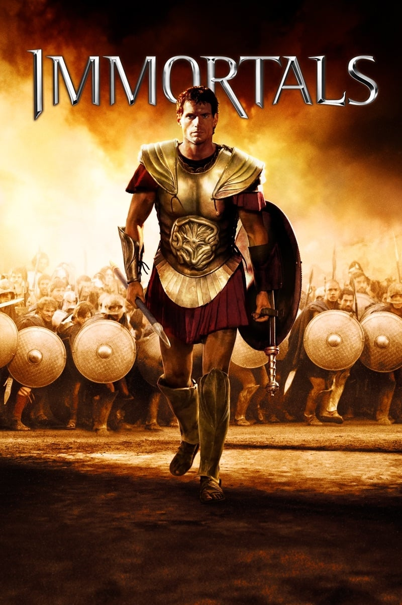

Мировая премьера: 11 ноября 2011
Слоган: Богам нужен герой.
Сюжет: Одержимый жаждой власти царь Гиперион хочет уничтожить род людской и низвергнуть богов. Но для этого ему необходимо завладеть Эпирским Луком, сделанным руками бога войны Ареса, который поможет Гипериону освободить Титанов от тысячелетнего заточения в горах Тартара. Боги бессильны противостоять безумному царю. Единственная надежда на спасение – герой Тесей, который вступает в неравную схватку с войском Гипериона. В смертельной битве Тесея поддерживают оракул Федра, раб Ставор и сам Зевс, но, кажется, мощь жестокого царя несокрушима...
Режиссёр: Тарсем Сингх Дхандвар
В основе: Мифология Древней Греции
В ролях: |
Генри Кавилл | Тесей |
| Мики Рурк | Гиперион | |
| Фрида Пинто | Федра | |
| Стивен Дорфф | Ставор | |
| Люк Эванс | Зевс | |
| Джон Хёрт | Старик | |
| Изабель Лукас | Афина | |
| Джозеф Морган | Лизандер | |
| Питер Стеббингс | Гелиос | |
| Келлан Латс | Посейдон | |
| Стивен МакХэтти | Кассандер | |
| Дэниэл Шарман | Арес | |
| Алан Ван Спранг | Дарий | |
| Грег Брайк | Монах |
Бюджет: $ 75 млн.
Кассовые сборы в США: $ 84 млн.
Кассовые сборы в мире: $ 227 млн.
Продолжительность: 1 ч. 42 мин.
Рейтинг: 6.0